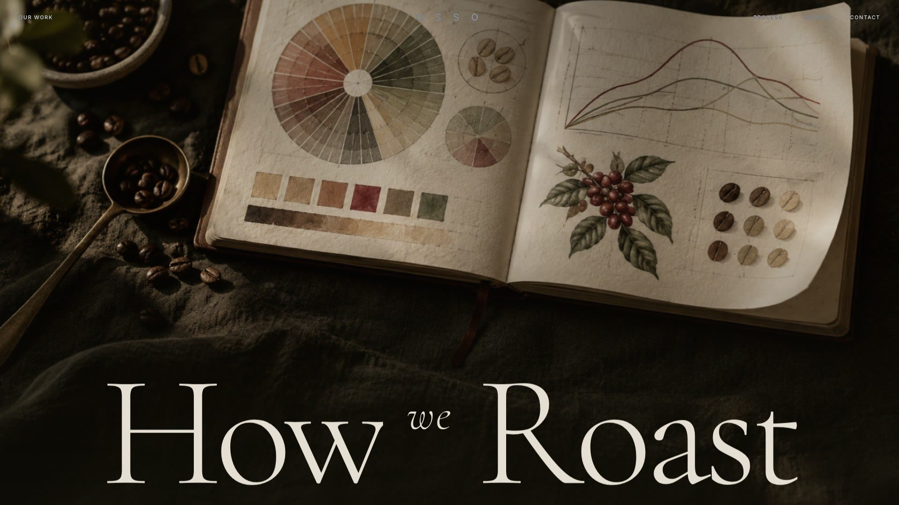
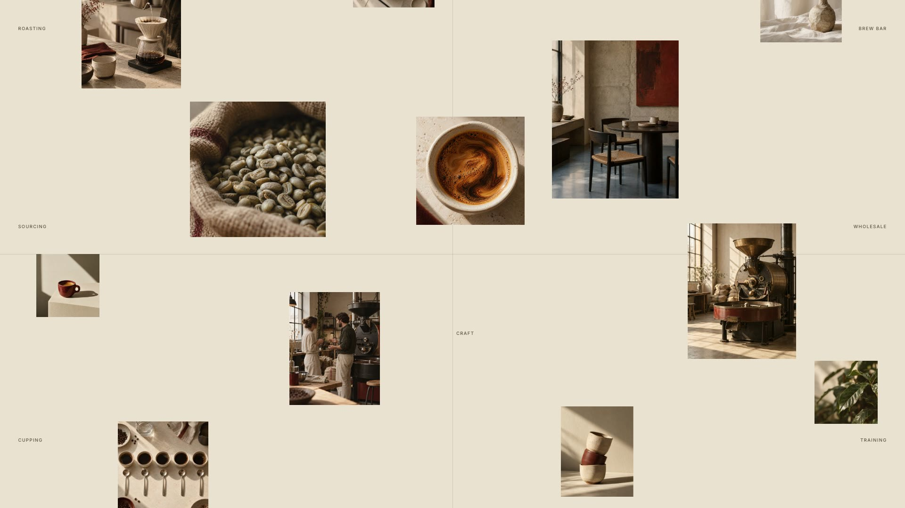
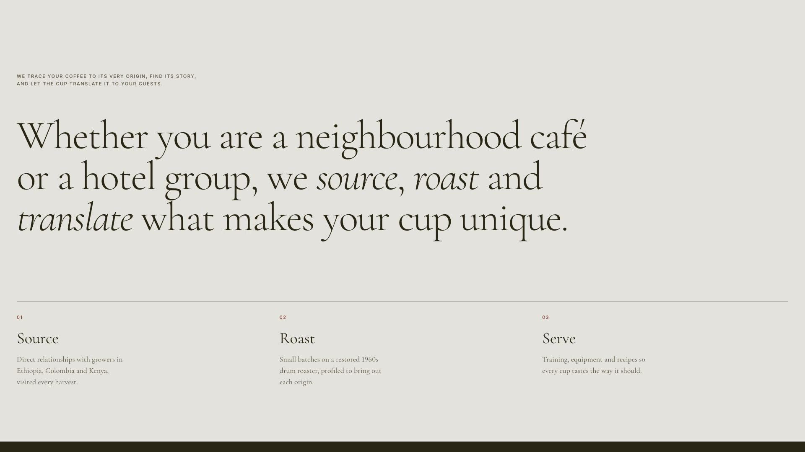
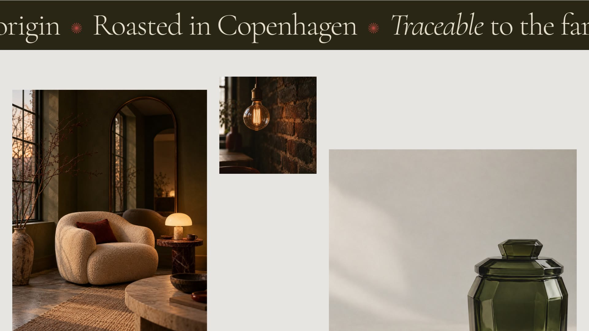
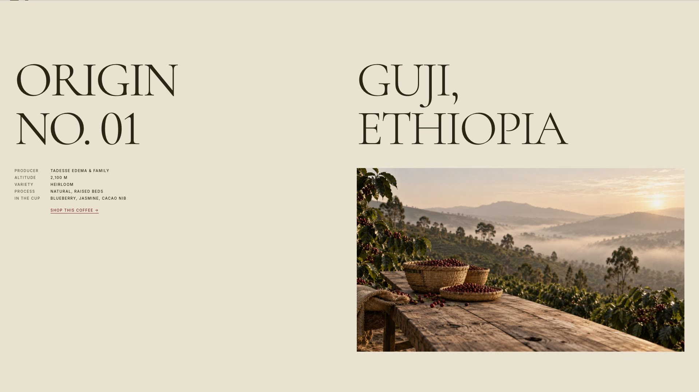
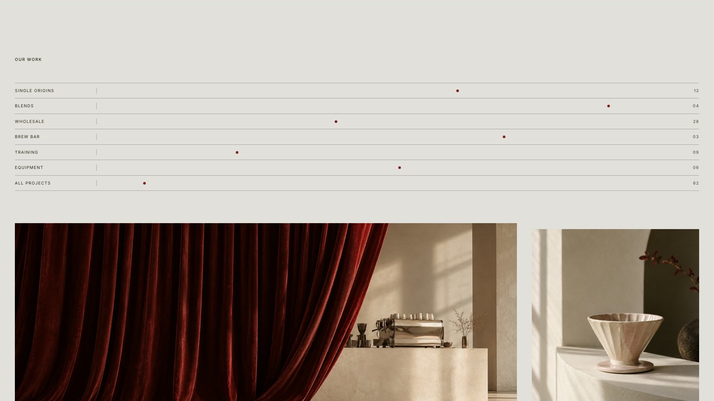
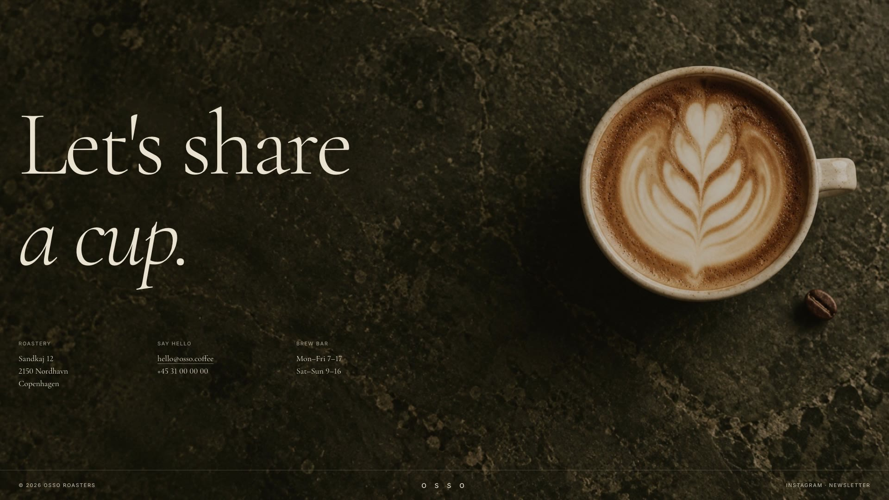

Rationale
OSSO is a concept for a small specialty roastery in Copenhagen. Coffee sites tend to lead with a shop grid. This one leads with the craft and reads like a print journal: a high-contrast serif set large, a small spaced grotesk for labels, and a palette of cream, bone and olive black with a single oxblood accent.
The structure comes from an editorial studio site, translated for coffee. The opening is a tasting journal under the words How we Roast, with the letters rising in one by one after a short count-up. Below it, twelve photographs drift around a single sentence about the roastery, each at its own depth, so the page moves with both the scroll and the pointer.
A studio site would show films here. A roastery shows where its coffee comes from, so those pages became Origins. Each one sets the region in display type beside the details a buyer actually checks: producer, altitude, variety, process and tasting notes, with a link to buy that coffee.
The interactions stay small and serve the reading. Words in the process statement light up as you scroll past them. A marquee speeds up and leans with your scroll. JOURNAL slides sideways, and photographs open from the bottom as they arrive. The cursor becomes a View label over images, links lean towards it, and the Our Work index shows a photograph that follows the cursor down the rows.
All imagery was art directed and generated for the project from one prompt system, so the light, grain and palette hold across twenty-two photographs. The showcase film is a real recording of the site in use, 48 seconds from the count-up to the contact page, with the cursor, hovers and scroll effects running as they do in the browser. It has an original soundtrack: a slow chord pad at 90 BPM, soft bell plucks, and a whoosh landing on every scroll.
Showcase Film
48 seconds, sound onSection by Section







Full Website
Open full site ↗This is the live build. Scroll inside the frame, or open it full screen to see the parallax collage, the cursor and the hover previews at full size.
On Mobile
At phone width the headline stacks into three lines and the floating collage settles into a three-column grid. The statement comes first, origins drop to one column, and the custom cursor and hover effects switch off because there is no pointer. Each phone above scrolls a different part of the same mobile page.
Imagery


Twenty-two photographs, art directed and generated from one prompt system so the light and palette match across the site. A selection is shown here.